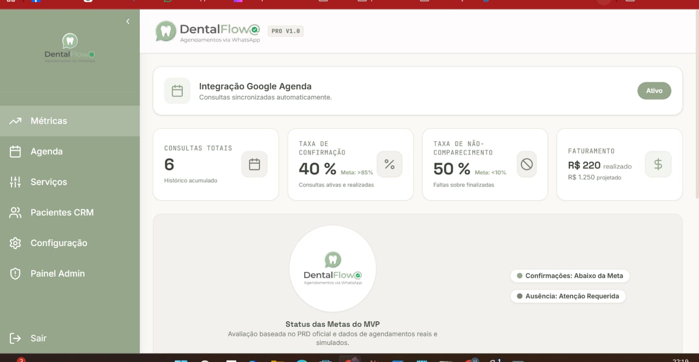

Agenda por profissional
Visões diária e semanal, horários de trabalho, pausas, bloqueios e feriados. Sem choque de horário.
O DentalFlow responde pacientes pelo WhatsApp, preenche a agenda, confirma consultas e organiza os retornos — sem tirar o controle das mãos da sua equipe.

Automatiza a parte repetitiva da agenda e do relacionamento, e devolve tempo para a equipe cuidar do paciente.
Visões diária e semanal, horários de trabalho, pausas, bloqueios e feriados. Sem choque de horário.
O assistente consulta a disponibilidade real, agenda, reagenda e cancela — no WhatsApp que o paciente já usa.
Lembretes configuráveis e pedido de confirmação automático. O paciente responde na conversa; a recepção só acompanha.
Segmentos de pacientes (novos, ativos, faltosos, manutenção), lista de retornos e campanhas com aprovação humana.
Taxas de confirmação, falta, cancelamento e reagendamento. Ocupação por profissional e receita potencial x recebida.
Sincronização opcional e segura, para a clínica não manter duas agendas em paralelo.
Do "oi" do paciente ao retorno programado depois da consulta.
O assistente se identifica como assistente virtual da clínica e apresenta o aviso de privacidade.
O servidor calcula as opções realmente disponíveis por profissional e unidade.
O sistema registra a origem do agendamento. A recepção pode assumir a conversa a qualquer momento.
O paciente confirma, reagenda ou cancela pelo WhatsApp. Nada de ligações de confirmação uma a uma.
Depois da consulta, a equipe registra o resultado e o paciente entra na lista de retorno na hora certa.
Clínicas odontológicas pequenas e médias e dentistas autônomos com recepção própria ou compartilhada.
Agenda confiável, confirmações sem telefone na mão e uma caixa de entrada só.
Agenda por profissional, histórico do paciente e menos buracos de horário.
Ocupação, faltas e origem dos agendamentos em números claros.
Marcam e remarcam pelo WhatsApp, sem instalar nada e sem espera.
O DentalFlow está em fase de piloto com clínicas parceiras. Nenhum dado real é importado sem ensaio em cópia e autorização explícita. Quer participar? Fale com a gente.
Quero ser clínica pilotoNão. O paciente conversa pelo WhatsApp que já usa. A clínica acessa o DentalFlow pelo navegador, no computador da recepção ou no tablet.
Ele envia confirmações e lembretes configuráveis pelo WhatsApp e organiza a lista de retornos. O paciente confirma, reagenda ou cancela na própria conversa, e a recepção vê tudo em um painel.
Não. O assistente se identifica como assistente virtual da clínica e resolve o básico (disponibilidade, agendamento, confirmação). A qualquer momento a conversa passa para uma pessoa da equipe.
Sim, há sincronização opcional e segura com o Google Agenda, além das visões diária e semanal por profissional dentro do próprio DentalFlow.
Credenciais de WhatsApp, Google e IA nunca ficam no navegador. O acesso é por função, com consentimento versionado, criptografia e registro de auditoria.
O DentalFlow está em piloto controlado. Fale com a gente pelo WhatsApp para uma demonstração e para entrar na lista de clínicas piloto.
Agende uma demonstração do DentalFlow e veja o fluxo completo com dados de exemplo.
Atendimento pela Utopia Desenvolvimentos.Criamos sistemas e experiências digitais que unem tecnologia, propósito e cuidado com as pessoas.
Conheça nossas soluções